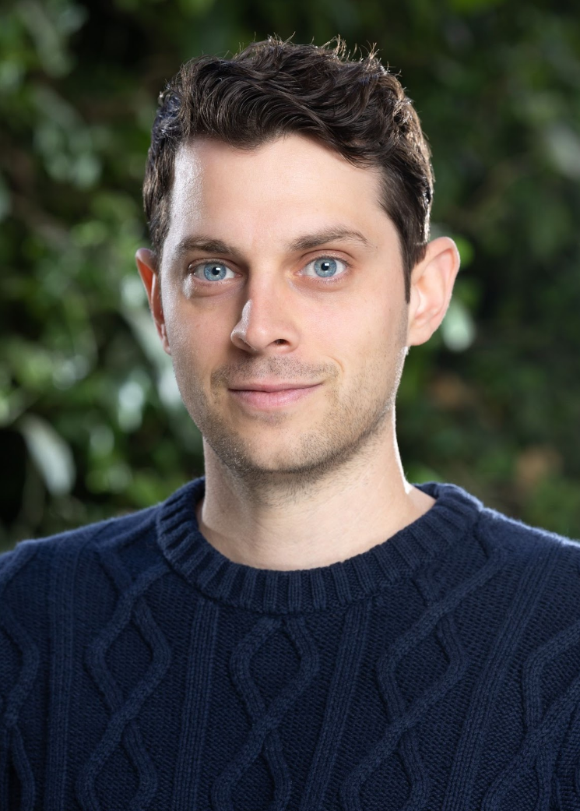

David A. Vivian — Academic Portfolio

Visiting Assistant Professor of French Language and Culture, Soka University
Email | CV
About
I am a Visiting Assistant Professor of French Language and Culture at Soka University. A specialist in Caribbean and francophone literature, I situate much of my work within the environmental humanities. My first monograph, Decolonial Ecologies in Francophone Caribbean Literature: From Messiahs to Mangroves (under contract with Liverpool UP), develops the concept of “eco-epistemology” to explore how Caribbean authors challenge Eurocentric categories of nature, culture, and knowledge. Against the instrumentalist legacies of colonial capitalism, I read authors such as Suzanne and Aimé Césaire, Patrick Chamoiseau, Maryse Condé, Édouard Glissant, Yanick Lahens, and Gisèle Pineau to elucidate a critique of social and ecological messianism, gesturing instead toward relational and decolonial alternatives.
Education
- Ph.D. in Comparative Literature and French, University of California, Santa Barbara, 2023
Dissertation: Towards a Caribbean Eco-Epistemology: From Messiahs to Mangroves [link] - M.A. in Comparative Literature and French, University of California, Santa Barbara, 2018
- B.A. in Literature, University of California, Santa Cruz, 2015
Teaching Experience and Philosophy
Visiting Assistant Professor of French Language and Culture, Soka University (2024–Present)
Visiting Assistant Professor of French, Skidmore College (2023-24)
Visiting Lecturer, Université de Paris-VIII (2022)
Instructor, English as a Second Language (ESL), El Encanto Hotel (2022)
Graduate Student Instructor, Comparative Literature and French, UC Santa Barbara (2016-22)
I am committed to student-centered teaching in my language and culture courses, helping cultivate vital skills at a time when education is actively under assault. With extensive teaching experience at both liberal arts colleges and research universities, I am adept at fostering inclusive classrooms that encourage students to connect language learning to critical issues, such as climate concerns, social justice, and knowledge in the age of AI.
Publications
- “A Conversation with Stephanie Saulter: Adaptation and Resilience in the Multicultural Sci-Fi City.” In Urban Discourses of Crisis, Resilience, and Resistance: Cities Under Stress, eds. Lanigan, Lappälä, and Prieto. Palgrave Macmillan, 2025. [link]
- “The Complexity of Community: Ecology, Science Fiction, and the Future of Literature — A Conversation with Tobias Buckell.” Journal of West Indian Literature 31.1, 2022. [link]
- “Exploring Postcolonial Prejudice and Ecology through Science Fiction — An Interview with Stephanie Saulter.” sx salon 40, 2022. [link]
- “Non-Anthropocentric Ecologies in Jacques Stéphen Alexis’s Romancero aux étoiles and Yanick Lahens’s Bain de lune.” Journal of Haitian Studies 28.1, 2022. [link]
- “Eco-Epistemology and Eschatology: Examining the Savior Complex in Jacques Roumain’s Gouverneurs de la rosée and Patrick Chamoiseau’s Les neuf consciences du Malfini.” French Forum 45.2, 2020. [link]
In Progress
Decolonial Ecologies in Francophone Caribbean Literature: From Messiahs to Mangroves. Under contract with Liverpool University Press. (Manuscript submitted)
“Caribbean Science Fiction and the Reimagining of Urban Ecology.” Journal of Modern Literature, special issue: “Caribbean Literature and the Environment.” (Accepted; 2026)
“Towards a Caribbean Holistic Ethics of Care: Postcolonial Ecofeminist Stakes in Kei Miller’s Augustown and Maryse Condé’s Crossing the Mangrove.” The Handbook of Postcolonial Ecofeminism, eds. Aslı Değirmenci Altın and Douglas A. Vakoch. (Final draft submitted; volume under review)
Public Writing
- “The colonial legacy lurking beneath economic unrest in the French Caribbean.” The Conversation, 1 November 2024 [link]
Selected Presentations
- “Toxicity and Coloniality.” Toxic Exposure: Chemicals in Contemporary Global Fiction. The American Comparative Literature Association (ACLA) Annual Conference, May 29–June 1, 2025
- “Urban Poverty and the Promise of Paradise: Mahi Binebine’s Horses of God.” Soka University, EMP 335: Cities and Environment in the Global South (Prof. Deike Peters), October 3, 2024
- “Creole Creativity as Plantation Resistance: A Decolonial-Ecofeminist Perspective,” Amherst College (Lecture sponsored by the Department of French), March 13, 2024
- “Emergent Eco-epistemology: Caribbean Ecopoetics and Climate Change.” UCLA’s Annual Southland Conference, “Emergences,” August 10–11, 2021
- “The Haunting Past: Trauma, Time, and (Post)Memory in Patrick Modiano’s Dora Bruder.” The Centre for Comparative Literature’s 29th Annual Conference, University of Toronto, March 29–30, 2019
Selected Courses
- Decolonial Ecologies of the Caribbean
- Informal Cities in the Francophone World
- Traduire, c’est trahir ? The Art of Translation
- Introduction to Francophone Literature
- The Anthropocene: Rethinking the Human-Environment Relation
- Paris, ‘la ville aux cent mille romans’ (1830–1930)
- French Literature from the Renaissance to the Enlightenment
- The Modern World in Six Novels
Faculty Seminar (Mellon Grant - Skidmore College)
- Black Ecologies: Environmental (In)justice and Radical Resistance
Contact
- Email: dvivian@soka.edu
- GitHub | LinkedIn